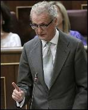

2012-03-27T12:20:00+02:00
Cameron publica la lista de los invitados a sus cenas privadas
Cameron publica la lista de los invitados a sus cenas privadas
En total fueron 15 las personas que tuvieron acceso al primer ministro a cambio de donaciones por valor de 25 millones de libras.El Gobierno británico se vio obligado a revelar ayer finalmente la lista de personas que cenaron en la residencia oficial del primer ministro, David Cameron, y que realizaron donaciones millonarias al Partido Conservador -según The Daily Telegraph llegaron a los 25 millones de libras-.
El primer ministro británico, David Cameron. Reuters
En total fueron 15 las personas que tuvieron acceso al primer ministro a cambio de donaciones por valor de 25 millones de libras.
El Gobierno británico se vio obligado a revelar ayer finalmente la lista de personas que cenaron en la residencia oficial del primer ministro, David Cameron, y que realizaron donaciones millonarias al Partido Conservador -según The Daily Telegraph llegaron a los 25 millones de libras-.
Continuar leyendo...
2012-03-27T11:58:00+02:00
El obispo de Ciudad Real carga contra la reforma laboral
El obispo de Ciudad Real carga contra la reforma laboral
El prelado cree que la nueva norma "rebaja los derechos de los trabajadores". El obispo de Ciudad Real, Antonio Algora, ha criticado la reforma laboral. Entiende el prelado que la nueva norma aprobada por el PP rebaja "claramente" los derechos de los trabajadores y busca establecer un mercado de trabajo en el que los empleadores "hagan y deshagan a su antojo".
Antonio Algora, obispo de Ciudad Real y responsable del sostenimiento económico de la Iglesia.EFE / ÁNGEL DÍAZ
El prelado cree que la nueva norma "rebaja los derechos de los trabajadores".
El obispo de Ciudad Real, Antonio Algora, ha criticado la reforma laboral. Entiende el prelado que la nueva norma aprobada por el PP rebaja "claramente" los derechos de los trabajadores y busca establecer un mercado de trabajo en el que los empleadores "hagan y deshagan a su antojo".
Continuar leyendo...
2012-03-27T11:48:00+02:00
Willie Toledo llama a la huelga general
Willie Toledo llama a la huelga general
El actor argumenta que la nueva agrupación Coordinadora de Trabajadores y Trabajadoras del Espectáculo pretende luchar contra las políticasde los conservadoresEl actor Willie Toledo ha argumentado que la nueva agrupación Coordinadora de Trabajadores y Trabajadoras del Espectáculo pretende luchar contra las políticas de recorte que ha emprendido el Gobierno del Partido Popular desde las pasadas elecciones generales y ha reprochado que "ni una sola de las medidas va encaminada a paliar la crisis", sino a "acabar con los derechos laborales".
El actor argumenta que la nueva agrupación Coordinadora de Trabajadores y Trabajadoras del Espectáculo pretende luchar contra las políticasde los conservadores
El actor Willie Toledo ha argumentado que la nueva agrupación Coordinadora de Trabajadores y Trabajadoras del Espectáculo pretende luchar contra las políticas de recorte que ha emprendido el Gobierno del Partido Popular desde las pasadas elecciones generales y ha reprochado que "ni una sola de las medidas va encaminada a paliar la crisis", sino a "acabar con los derechos laborales".
Continuar leyendo...
Amaiur cita la "aportación" de Otegi a la paz para pedir su libertad
Amaiur cita la "aportación" de Otegi a la paz para pedir su libertad
La coalición independentista vasca considera que la sentencia del 'caso Bateragune' que revisa mañana el Tribunal Supremo tiene un "cariz político"El exdirigente de Batasuna, Arnaldo Otegi, el exscertario general de LAB, Rafa Díez Usabiaga, y las otras tres personas encarceladas por la Audiencia Nacional en el marco del denominado caso Bateragune, han tenido una "implicación directa" en el proceso de paz que vive hoy el pueblo vasco y su "aportación" así como su "apuesta" por un marco de convivencia sin violencia ha sido determinante para la resolución del conflicto.

Históricos dirigentes de la izquierda abertzale así como representantes de Aralar, Alternatiba y distintos sindicatos han exigido hoy en San Sebastián que se revoque la sentencia del denominado caso Bateragune y la liberación de los cinco condenados, entre ellos Arnaldo Otegi.En la imagen Rufi Etxeberria (i), Oscar Matute (c) y Mertxe Colina.EFE/GORKA ESTRADA
La coalición independentista vasca considera que la sentencia del 'caso Bateragune' que revisa mañana el Tribunal Supremo tiene un "cariz político"
El exdirigente de Batasuna, Arnaldo Otegi, el exscertario general de LAB, Rafa Díez Usabiaga, y las otras tres personas encarceladas por la Audiencia Nacional en el marco del denominado caso Bateragune, han tenido una "implicación directa" en el proceso de paz que vive hoy el pueblo vasco y su "aportación" así como su "apuesta" por un marco de convivencia sin violencia ha sido determinante para la resolución del conflicto.
Continuar leyendo...
2012-03-27T10:33:00+02:00
La economía vuelve a caer en el primer trimestre y aumenta el paro
La economía vuelve a caer en el primer trimestre y aumenta el paro
El Banco de España confirma "la prolongación de la dinámica contractiva" del PIB en los primeros meses de 2012El último boletín del Banco de España, el de marzo, certifica lo que ya sabe casi todo el mundo: la economía española vuelve a decrecer en el primer trimestre del año al tiempo que la destrucción de empleo se intensifica. Estos datos no hacen sino confirmar los malos augurios que el propio organismo supervisor hizo públicos el pasado 23 de enero, cuando pronosticó que la economía española caerá un 1,5% en 2012.
El Banco de España confirma "la prolongación de la dinámica contractiva" del PIB en los primeros meses de 2012
El último boletín del Banco de España, el de marzo, certifica lo que ya sabe casi todo el mundo: la economía española vuelve a decrecer en el primer trimestre del año al tiempo que la destrucción de empleo se intensifica. Estos datos no hacen sino confirmar los malos augurios que el propio organismo supervisor hizo públicos el pasado 23 de enero, cuando pronosticó que la economía española caerá un 1,5% en 2012.
Continuar leyendo...
2012-03-27T10:01:00+02:00
Muere tras salir de su coche y caerse por un barranco en Málaga
Muere tras salir de su coche y caerse por un barranco en Málaga
El fallecido, de 55 años, se despeñó cien metros.El fallecido, de 55 años, se despeñó desde una altura de cien metros.El cuerpo del hombre, conductor del vehículo y cuyas iniciales son F.J.M.G.L., fue trasladado hasta la carretera por los bomberos desde el terraplén en el que cayó, unos cien metros hacia abajo.
El fallecido, de 55 años, se despeñó cien metros.El fallecido, de 55 años, se despeñó desde una altura de cien metros.
El cuerpo del hombre, conductor del vehículo y cuyas iniciales son F.J.M.G.L., fue trasladado hasta la carretera por los bomberos desde el terraplén en el que cayó, unos cien metros hacia abajo.
Continuar leyendo...
Soria anuncia que la luz subirá en abril entre el 5 y el 7%
Soria anuncia que la luz subirá en abril entre el 5 y el 7%
El ministro de Industria asegura que la subida se produce tras haberse superado el límite anual de generación de déficit de tarifaEra algo que ya se esperaba. El ministro de Industria, Energía y Turismo, José Manuel Soria, anunció este martes que la tarifa eléctrica de último recurso (TUR), a la que están acogida más de 20 millones de hogares y pymes, subirá el próximo 1 de abril entre el 5 y el 7 %. Esa subida repercutirá en el recibo a partir de esa fecha.
El ministro de Industria asegura que la subida se produce tras haberse superado el límite anual de generación de déficit de tarifa
Era algo que ya se esperaba. El ministro de Industria, Energía y Turismo, José Manuel Soria, anunció este martes que la tarifa eléctrica de último recurso (TUR), a la que están acogida más de 20 millones de hogares y pymes, subirá el próximo 1 de abril entre el 5 y el 7 %. Esa subida repercutirá en el recibo a partir de esa fecha.
Continuar leyendo...
2012-03-27T09:19:00+02:00
Obama promete a Medvédev ser "más flexible" tras las elecciones
Obama promete a Medvédev ser "más flexible" tras las elecciones
Las cámaras captan parte de la conversación que ambos presidentes mantuvieron durante su reunión en la cumbre de Seúl
Las cámaras captan parte de la conversación que ambos presidentes mantuvieron durante su reunión en la cumbre de Seúl
Continuar leyendo...
Obama invita a Rajoy a la Casa Blanca
Obama invita a Rajoy a la Casa Blanca
"Sé que nuestros equipos están trabajando muy bien juntos", le dijo el presidente estadounidense al españolEs ya casi un clásico de la política española. En la agenda de cada nuevo inquilino de La Moncloa está marcada en rojo la fecha del primer encuentro con el presidente estadounidense de turno. La prensa calienta motores de cara a ese primer encuentro, que por lo general suele ser bastante breve y reducirse a poco más que un apretón de manos.
Obama y Rajoy coincidieron apenas dos minutos en Seúl.LARRY DOWNING / REUTERS
"Sé que nuestros equipos están trabajando muy bien juntos", le dijo el presidente estadounidense al español
Es ya casi un clásico de la política española. En la agenda de cada nuevo inquilino de La Moncloa está marcada en rojo la fecha del primer encuentro con el presidente estadounidense de turno. La prensa calienta motores de cara a ese primer encuentro, que por lo general suele ser bastante breve y reducirse a poco más que un apretón de manos.
Continuar leyendo...
2012-03-26T23:19:00+02:00
Una ley de Transparencia llena de limitaciones y ambigüedades
Una ley de Transparencia llena de limitaciones y ambigüedades
El texto del anteproyecto contempla múltiples excepciones al acceso a la información y deja abierta a la interpretación algunas de las infracciones y sanciones a altos cargos públicos El Gobierno ha hecho público el anteproyecto de la ley de Transparencia, Acceso a la Información Pública y Buen Gobierno, aprobado el viernes por el Consjeo de Minsitros. Un texto que por el momento -estará abierto a las sugerencias de los ciudadanos durante 15 días- recoge una larga lista de límites y excepciones al derecho de acceso a la información, además de una serie de ambigüedades que arrojan poca luz sobre cuál será su efectividad real.
El texto del anteproyecto contempla múltiples excepciones al acceso a la información y deja abierta a la interpretación algunas de las infracciones y sanciones a altos cargos públicos
El Gobierno ha hecho público el anteproyecto de la ley de Transparencia, Acceso a la Información Pública y Buen Gobierno, aprobado el viernes por el Consjeo de Minsitros. Un texto que por el momento -estará abierto a las sugerencias de los ciudadanos durante 15 días- recoge una larga lista de límites y excepciones al derecho de acceso a la información, además de una serie de ambigüedades que arrojan poca luz sobre cuál será su efectividad real.
Continuar leyendo...
2012-03-27T07:36:00+02:00
Revista Mongolia: "Mucha gente ha sepultado el papel antes de tiempo"
Revista Mongolia: "Mucha gente ha sepultado el papel antes de tiempo"
La nueva publicación revoluciona los quioscos con un humor irreverente y surrealista que bebe de publicaciones míticas como 'Hermano Lobo', 'La Codorniz' o 'El Papus'Bin Laden está vivo. En realidad, Estados Unidos se cargó a Gaspar Llamazares y quien se pasea por los pasillos de la sede de Izquierda Unida es el líder de Al Qaeda. El scoop es de Mongolia, una revista medio lapona cuyos temas nada tienen que ver con los de sus compañeros de quiosco: El Rey, confundido con un oso panda o bien Interior y Educación serán un único ministerio.
La nueva publicación revoluciona los quioscos con un humor irreverente y surrealista que bebe de publicaciones míticas como 'Hermano Lobo', 'La Codorniz' o 'El Papus'
Bin Laden está vivo. En realidad, Estados Unidos se cargó a Gaspar Llamazares y quien se pasea por los pasillos de la sede de Izquierda Unida es el líder de Al Qaeda. El scoop es de Mongolia, una revista medio lapona cuyos temas nada tienen que ver con los de sus compañeros de quiosco: El Rey, confundido con un oso panda o bien Interior y Educación serán un único ministerio.
Continuar leyendo...
Prisión para el policía que atropelló a una ciclista y se dio a la fuga
Prisión para el policía que atropelló a una ciclista y se dio a la fuga
El agente, que no estaba se servicio, conducía bajo los efectos del alcohol. El compañero con el que el iba en el coche ha sido puesto en libertad con cargosEl juez de guardia de Palma ha decretado prisión sin fianza para el policía detenido por el atropello mortal de una ciclista alemana en Mallorca, ocurrido ayer, y que después se dio a la fuga, han informado fuentes judiciales. Para el otro policía que le acompañaba, el magistrado ha decretado su libertad con cargos.
El agente, que no estaba se servicio, conducía bajo los efectos del alcohol. El compañero con el que el iba en el coche ha sido puesto en libertad con cargos
El juez de guardia de Palma ha decretado prisión sin fianza para el policía detenido por el atropello mortal de una ciclista alemana en Mallorca, ocurrido ayer, y que después se dio a la fuga, han informado fuentes judiciales. Para el otro policía que le acompañaba, el magistrado ha decretado su libertad con cargos.
Continuar leyendo...
2012-03-26T21:18:00+02:00
Sarkozy: "Los que no respetan los valores de la República no tienen nada que hacer aquí"
Sarkozy: "Los que no respetan los valores de la República no tienen nada que hacer aquí"
El hermano del asesino de Toulouse, Abdelkader Merah, ha mostrado una actitud "muy cooperativa" en los interrogatoriosEl mensaje político del presidente francés, Nicolás Sarkozy, tras el asesinato de siete personas a manos del joven Mohamed Merah, es de dureza. Sarkozy ha informado hoy de que las autoridades francesas impedirán que entren en el país imanes radicales para participar en la conferencia islámica que se celebrará el próximo abril en París.
El presidente de Francia durante un acto electoral en Ormes - EFE
El hermano del asesino de Toulouse, Abdelkader Merah, ha mostrado una actitud "muy cooperativa" en los interrogatorios
El mensaje político del presidente francés, Nicolás Sarkozy, tras el asesinato de siete personas a manos del joven Mohamed Merah, es de dureza. Sarkozy ha informado hoy de que las autoridades francesas impedirán que entren en el país imanes radicales para participar en la conferencia islámica que se celebrará el próximo abril en París.
Continuar leyendo...
2012-03-26T18:58:00+02:00
Los 'Madariaga de Periodismo', premian a la prensa de altura
Los 'Madariaga de Periodismo', premian a la prensa de altura
José Antonio Guardiola ('TVE'), Álex Rodríguez ('La Vanguardia') y José María Patiño ('Cadena SER') son los periodistas ganadores de la XVIII ediciónLos periodistas José Antonio Guardiola (TVE), Alex Rodriguez (La Vanguardia) y José María Patiño (Cadena SER), han sido los ganadores de la XVIII edición de los Premios de Periodismo Europeo Salvador de Madariaga, según han adelantado este lunes los responsables del galardón.
Los periodistas José Antonio Guardiola (TVE) [i], Alex Rodriguez (La Vanguadia) [c] y José María Patiño (Cadena SER).
José Antonio Guardiola ('TVE'), Álex Rodríguez ('La Vanguardia') y José María Patiño ('Cadena SER') son los periodistas ganadores de la XVIII edición
Los periodistas José Antonio Guardiola (TVE), Alex Rodriguez (La Vanguardia) y José María Patiño (Cadena SER), han sido los ganadores de la XVIII edición de los Premios de Periodismo Europeo Salvador de Madariaga, según han adelantado este lunes los responsables del galardón.
Continuar leyendo...
2012-03-26T19:20:00+02:00
El PP asume el "rápido desgaste" de Rajoy por sus recortes
El PP asume el "rápido desgaste" de Rajoy por sus recortes
Cargos conservadores creen que no han sabido explicar las reformas y que los resultados en Andalucía son un "mazazo"El toque de atención que dieron los electores al Gobierno de Rajoy en Asturias y en Andalucía fue claro en las elecciones de este domingo, en especial en la comunidad andaluza.
Arenas, este domingo. EFE
Cargos conservadores creen que no han sabido explicar las reformas y que los resultados en Andalucía son un "mazazo"
El toque de atención que dieron los electores al Gobierno de Rajoy en Asturias y en Andalucía fue claro en las elecciones de este domingo, en especial en la comunidad andaluza.
Continuar leyendo...
2012-03-26T18:59:00+02:00
Caixabank compra Banca Cívica por casi 1.000 millones de euros
Caixabank compra Banca Cívica por casi 1.000 millones de euros
El grupo bancario resultante será el mayor en España por volumen de activos, por delante del BBVACaixaBank ha aprobado este lunes, en un consejo de administración extraordinario, el acuerdo de fusión con Banca Cívica, una operación que convertirá al banco del grupo La Caixa en la primera entidad financiera de España por volumen de activos, han indicado a Efe fuentes cercanas al proceso.
El grupo bancario resultante será el mayor en España por volumen de activos, por delante del BBVA
CaixaBank ha aprobado este lunes, en un consejo de administración extraordinario, el acuerdo de fusión con Banca Cívica, una operación que convertirá al banco del grupo La Caixa en la primera entidad financiera de España por volumen de activos, han indicado a Efe fuentes cercanas al proceso.
Continuar leyendo...
Greenpeace acusa a Soria de defender las "energías sucias"
Greenpeace acusa a Soria de defender las "energías sucias"
La ONG proyecta sobre el ministro de Industria el mensaje "I love nuclear"Activistas de Greenpeace se han introducido en el entorno 'wifi' del hotel Palace de Madrid, donde se entregaban los XXIII Premios de la Energía y mientras el ministro de Industria, Energía y Turismo, José Manuel Soria, pronunciaba su discurso han proyectado el mensaje 'I love nuclear'. Según Greenpeace, con esta acción la ONG quiere denunciar que el Ministerio de Industria "defiende a las energías sucias" a través de su política energética y lo acusa de realizar un acoso a las energías renovables "sin precedentes".
La ONG proyecta sobre el ministro de Industria el mensaje "I love nuclear"
Activistas de Greenpeace se han introducido en el entorno 'wifi' del hotel Palace de Madrid, donde se entregaban los XXIII Premios de la Energía y mientras el ministro de Industria, Energía y Turismo, José Manuel Soria, pronunciaba su discurso han proyectado el mensaje 'I love nuclear'. Según Greenpeace, con esta acción la ONG quiere denunciar que el Ministerio de Industria "defiende a las energías sucias" a través de su política energética y lo acusa de realizar un acoso a las energías renovables "sin precedentes".
Continuar leyendo...
2012-03-27T12:02:00+02:00
El club de la lucha
El club de la lucha
Las artes marciales mixtas se han convertido en el deporte de combate más lucrativo de Estados UnidosSus combates se conocían como "vale todo". En los años 90, el senador por Arizona y ex candidato presidencial John McCain las llamó "peleas de gallo humanas". Siguen prohibidas en algunos estados, como Nueva York, pero las artes marciales mixtas, (más conocidas por sus siglas en inglés, MMA) ya no son lo que eran. Bajo el tutelaje de la UFC (Ultimate Fighting Championship) la liga más importante del sector, se han convertido en el deporte de combate más lucrativo de Estados Unidos. Y ahora quieren conquistar España.
Las artes marciales mixtas se han convertido en el deporte de combate más lucrativo de Estados Unidos
Sus combates se conocían como "vale todo". En los años 90, el senador por Arizona y ex candidato presidencial John McCain las llamó "peleas de gallo humanas". Siguen prohibidas en algunos estados, como Nueva York, pero las artes marciales mixtas, (más conocidas por sus siglas en inglés, MMA) ya no son lo que eran. Bajo el tutelaje de la UFC (Ultimate Fighting Championship) la liga más importante del sector, se han convertido en el deporte de combate más lucrativo de Estados Unidos. Y ahora quieren conquistar España.
Continuar leyendo...
El exmarido de Whitney Houston, detenido por conducir borracho
El exmarido de Whitney Houston, detenido por conducir borracho
Bobby Brown ya pasó ocho días en la cárcel en 1996 por el mismo motivo. Esta vez ya ha sido puesto en libertad El cantante Bobby Brown, exmarido de Whitney Houston, fue arrestado este martes en Los Ángeles (EEUU) por dar positivo en un control de alcoholemia cuando circulaba con su automóvil poco después del mediodía, según ha informado la web TMZ.
Foto de archivo tomada el 12 de noviembre de 1999 de la cantante y actriz estadounidense Whitney Houston (dcha) y de su marido Bobby Brown.EFE
Bobby Brown ya pasó ocho días en la cárcel en 1996 por el mismo motivo. Esta vez ya ha sido puesto en libertad
El cantante Bobby Brown, exmarido de Whitney Houston, fue arrestado este martes en Los Ángeles (EEUU) por dar positivo en un control de alcoholemia cuando circulaba con su automóvil poco después del mediodía, según ha informado la web TMZ.
Continuar leyendo...
2012-03-27T11:30:00+02:00
Morenés recortará el presupuesto de Defensa en más de un 12%
Morenés recortará el presupuesto de Defensa en más de un 12%
El ministro ha anunciado que tiene previsto cerrar academias de formación que estén "congeladas" El ministro de Defensa, Pedro Morenés, ha anunciado que el Gobierno tiene previsto aplicar un recorte en el presupuesto del departamento que dirige para el año 2012 y que será entre un 12% y un 14%.

El ministro de Defensa, Pedro Morenés. EFE/JuanJo Martin
El ministro ha anunciado que tiene previsto cerrar academias de formación que estén "congeladas"
El ministro de Defensa, Pedro Morenés, ha anunciado que el Gobierno tiene previsto aplicar un recorte en el presupuesto del departamento que dirige para el año 2012 y que será entre un 12% y un 14%.
Continuar leyendo...
2012-03-27T11:02:00+02:00
España coloca 2.579 millones y baja el interés a muy corto plazo
España coloca 2.579 millones y baja el interés a muy corto plazo
La demanda roza los 11.300 millones. Sube ligeramente la rentabilidad de las letras a seis meses.El Tesoro Público adjudicó este martes 2.579 millones de euros en letras y bajó el interés de las de tres meses al 0,428%, su nivel más bajo desde marzo de 2010, en tanto que ha subido ligeramente la rentabilidad de las de seis meses hasta el 0,868 %, desde el 0,78 % precedente.
La demanda roza los 11.300 millones. Sube ligeramente la rentabilidad de las letras a seis meses.
El Tesoro Público adjudicó este martes 2.579 millones de euros en letras y bajó el interés de las de tres meses al 0,428%, su nivel más bajo desde marzo de 2010, en tanto que ha subido ligeramente la rentabilidad de las de seis meses hasta el 0,868 %, desde el 0,78 % precedente.
Continuar leyendo...
2012-03-27T09:37:00+02:00
Casi 700 personas fueron ejecutadas durante 2011 en 20 países
Casi 700 personas fueron ejecutadas durante 2011 en 20 países
Amnistía Internacional alerta de que un total de 18.750 personas fueron condenadas a pena de muerte el año pasadoAunque el número de personas ejecutadas en el mundo se ha reducido, las cifras siguen siendo alarmantes. Amnistía Internacional denuncia que en 2011 se ejecutó a 676 personas en 20 países, sin incluir a China, ya que los datos sobre este tema son secreto de Estado. También informa que en ese año se condenó con esta pena a 18.750 personas.
Amnistía Internacional alerta de que un total de 18.750 personas fueron condenadas a pena de muerte el año pasado
Aunque el número de personas ejecutadas en el mundo se ha reducido, las cifras siguen siendo alarmantes. Amnistía Internacional denuncia que en 2011 se ejecutó a 676 personas en 20 países, sin incluir a China, ya que los datos sobre este tema son secreto de Estado. También informa que en ese año se condenó con esta pena a 18.750 personas.
Continuar leyendo...
Detenido un miembro de Al Qaeda en Valencia
Detenido un miembro de Al Qaeda en Valencia
El conocido como 'Blibliotecario de Al Qaeda' gestionaba foros yihadistas en Internet donde alentaba al terrorismo y reclutaba a terroristas como MerahAgentes de la Guardia Civil han detenido hoy en Valencia a M.H.A., un miembro de la red de Al Qaeda que se encargaba de gestionar foros por Internet donde difundía productos audiovisuales y alentaba la realización de actos terroristas.
El conocido como 'Blibliotecario de Al Qaeda' gestionaba foros yihadistas en Internet donde alentaba al terrorismo y reclutaba a terroristas como Merah
Agentes de la Guardia Civil han detenido hoy en Valencia a M.H.A., un miembro de la red de Al Qaeda que se encargaba de gestionar foros por Internet donde difundía productos audiovisuales y alentaba la realización de actos terroristas.
Continuar leyendo...
2012-03-27T09:25:00+02:00
Rajoy y Obama, toma uno
Rajoy y Obama, toma uno
2012-03-27T08:19:00+02:00
Monti califica de "mal interpretadas" sus declaraciones sobre España
Monti califica de "mal interpretadas" sus declaraciones sobre España
El primer ministro italiano expresó "su preocupación" por la situación de la economía españolaEl primer ministro de Italia, Mario Monti, ha explicado este martes al presidente del Gobierno de España, Mariano Rajoy, que sus declaraciones sobre la situación económica de nuestro país fueron mal interpretadas.
El Presidente del Gobierno, Mariano Rajoy (i) y el Primer Ministro italiano, Mario Monti, durante la reunión que han mantenido en el marco de la Cumbre de Seguridad Nuclear que se celebra en Seúl. EFE/J.J.Guillen
El primer ministro italiano expresó "su preocupación" por la situación de la economía española
El primer ministro de Italia, Mario Monti, ha explicado este martes al presidente del Gobierno de España, Mariano Rajoy, que sus declaraciones sobre la situación económica de nuestro país fueron mal interpretadas.
Continuar leyendo...
2012-03-27T07:59:00+02:00
El hacker que pirateó las fotos de Scarlett Johansson desnuda se declara culpable
El hacker que pirateó las fotos de Scarlett Johansson desnuda se declara culpable
El hacker que pirateó y difundió las imágenes de Scarlett Johansson desnuda se ha declarado culpable. Christopher Chaney, de 35 años, ha admitido que accedió ilegalmente a las cuentas de correo electrónico de varias estrellas, cuyas fotografías acabaron en Internet. Tras la admisión de los nueve cargos que se le imputan, entre ellos espionaje, ha pasado a disposición judicial. El juicio se celebrará el próximo 23 de julio, y se enfrenta a una condena de 60 años de cárcel.
El hacker que pirateó y difundió las imágenes de Scarlett Johansson desnuda se ha declarado culpable. Christopher Chaney, de 35 años, ha admitido que accedió ilegalmente a las cuentas de correo electrónico de varias estrellas, cuyas fotografías acabaron en Internet.
Tras la admisión de los nueve cargos que se le imputan, entre ellos espionaje, ha pasado a disposición judicial. El juicio se celebrará el próximo 23 de julio, y se enfrenta a una condena de 60 años de cárcel.
Continuar leyendo...
2012-03-26T23:23:00+02:00
El Sevilla coge impulso
El Sevilla coge impulso
Negredo y Del Moral desactivan al GranadaLa conexión letal formada en ataque por los internacionales españoles Álvaro Negredo y Manu del Moral ha otorgado la victoria al Sevilla en su visita al Granada (0-3), en el derbi andaluz que este lunes cerraba la jornada.
Los jugadores del Sevilla celebran su victoria en campo del Granada. -EFE
Negredo y Del Moral desactivan al Granada
La conexión letal formada en ataque por los internacionales españoles Álvaro Negredo y Manu del Moral ha otorgado la victoria al Sevilla en su visita al Granada (0-3), en el derbi andaluz que este lunes cerraba la jornada.
Continuar leyendo...
2012-03-26T22:31:00+02:00
"Cuba se esfuerza por renovar y ensanchar sus horizontes"
"Cuba se esfuerza por renovar y ensanchar sus horizontes"
El pontífice asegura que en su visita pedirá a la Virgen de la Caridad que guíe el destino de la islaCuba está en plena época de reformas económicas, en la que la isla trata de salvar la gratuidad de sus 'joyas de la corona' —el sistema sanitario, el educativo, y la asistencia social—, mediante la desregularización y el aumento de la competitividad de algunos sectores. Un tiempo que crea esperanza e incertidumbre a partes iguales, ya que la revolución cubana avanza hacia lo desconocido.
El papa junto al presidente de la República de Cuba, Raúl Castro - REUTERS
El pontífice asegura que en su visita pedirá a la Virgen de la Caridad que guíe el destino de la isla
Cuba está en plena época de reformas económicas, en la que la isla trata de salvar la gratuidad de sus 'joyas de la corona' —el sistema sanitario, el educativo, y la asistencia social—, mediante la desregularización y el aumento de la competitividad de algunos sectores. Un tiempo que crea esperanza e incertidumbre a partes iguales, ya que la revolución cubana avanza hacia lo desconocido.
Continuar leyendo...
2012-03-26T21:32:00+02:00
'Mad Men' regresa con récord de audiencia
'Mad Men' regresa con récord de audiencia
La popular serie vuelve en EEUU con su esperada quinta temporada tras año y medio de ausenciaCasi un año y medio de espera era demasiado para los seguidores de la serie Mad Men, que han acudido en masa a ver el estreno del primer capítulo de la quinta temporada [CONTIENE SPOILERS].
La popular serie vuelve en EEUU con su esperada quinta temporada tras año y medio de ausencia
Casi un año y medio de espera era demasiado para los seguidores de la serie Mad Men, que han acudido en masa a ver el estreno del primer capítulo de la quinta temporada [CONTIENE SPOILERS].
Continuar leyendo...
La fuga de votos del PP se extiende a casi toda Andalucía
La fuga de votos del PP se extiende a casi toda Andalucía
Los conservadores ganan en cinco provincias andaluzas pero sólo logran recuperar dos de los ocho puntos que perdió el PSOEEl recuento de los votos de los comicios autonómicos celebrados el domingo arroja para el PP un saldo positivo en cuanto a porcentaje de voto en las dos comunidades en las que se celebraron, pero deja en el partido de Mariano Rajoy una sensación agridulce.
Javier Arenas comparece en la noche electoral, el pasado domingo.
Los conservadores ganan en cinco provincias andaluzas pero sólo logran recuperar dos de los ocho puntos que perdió el PSOE
El recuento de los votos de los comicios autonómicos celebrados el domingo arroja para el PP un saldo positivo en cuanto a porcentaje de voto en las dos comunidades en las que se celebraron, pero deja en el partido de Mariano Rajoy una sensación agridulce.
Continuar leyendo...
2012-03-26T18:40:00+02:00
La serie 'Juegos de Tronos' tomará su propio rumbo
La serie 'Juegos de Tronos' tomará su propio rumbo
En un vídeo de más de 20 minutos, sus creadores David Benioff y David Weiss desvelan novedades a partir de la segunda temporada, que se estrena en España el 23 de abril Mientras la HBO sigue preparando el terreno con nuevas imágenes y el enésimo clip promocional de la inminente segunda temporada. En este video, además nuevas escenas, los creadores de Juego de Tronos dan algunas pistas sobre el rumbo que tomará la serie que vuelve a las pantallas estadounidenses el 1 de abril. Para ver los nuevos capítulos en España habrá que esperar hasta 23 del mismo mes, cuando se estrenen en Canal +.
En un vídeo de más de 20 minutos, sus creadores David Benioff y David Weiss desvelan novedades a partir de la segunda temporada, que se estrena en España el 23 de abril
Mientras la HBO sigue preparando el terreno con nuevas imágenes y el enésimo clip promocional de la inminente segunda temporada. En este video, además nuevas escenas, los creadores de Juego de Tronos dan algunas pistas sobre el rumbo que tomará la serie que vuelve a las pantallas estadounidenses el 1 de abril. Para ver los nuevos capítulos en España habrá que esperar hasta 23 del mismo mes, cuando se estrenen en Canal +.
Continuar leyendo...
2012-03-26T19:15:00+02:00
Annan no descarta enviar observadores de la ONU a Siria
Annan no descarta enviar observadores de la ONU a Siria
El enviado especial de la ONU ha pasado hoy por Rusia y se dispone a viajar a China para continuar las negociacionesLos actores internacionales continúan explorando vías para encontrar una salida al conflicto en Siria, una tragedia que ha provocado un año de sangre. En esta ocasión, lo hacen con la esperanza que trae el camino abierto hace unos días, cuando los cinco países que forman el Consejo de Seguridad de la ONU llegaron a un acuerdo: la mediación de Kofi Annan en calidad enviado especial de Naciones Unidas y la Liga Árabe.
El presidente ruso Dmitry Médvedev da la bienvenida al enviado especial de la ONU y de la Liga Árabe, Kofi Annan - EFE
El enviado especial de la ONU ha pasado hoy por Rusia y se dispone a viajar a China para continuar las negociaciones
Los actores internacionales continúan explorando vías para encontrar una salida al conflicto en Siria, una tragedia que ha provocado un año de sangre. En esta ocasión, lo hacen con la esperanza que trae el camino abierto hace unos días, cuando los cinco países que forman el Consejo de Seguridad de la ONU llegaron a un acuerdo: la mediación de Kofi Annan en calidad enviado especial de Naciones Unidas y la Liga Árabe.
Continuar leyendo...
2012-03-26T18:40:00+02:00
La música digital mitiga la agonía del CD
La música digital mitiga la agonía del CD
La venta de CD descendió un 16,7%, mientras que las digitales aumentaron un 21,1%La venta de discos continúa su caída libre en España por décimo año consecutivo. Todo lo contrario que las ventas digitales, que aumentaron un 21,1% y que contribuyeron a que a la industria española cerrara 2011 con una reducción de beneficios de 'solo' el 3,3%, según el informe La industria discográfica publicado por la Asociación Internacional de Productores Fonográficos (IFPI, en sus siglas inglesas).
La venta de CD descendió un 16,7%, mientras que las digitales aumentaron un 21,1%
La venta de discos continúa su caída libre en España por décimo año consecutivo. Todo lo contrario que las ventas digitales, que aumentaron un 21,1% y que contribuyeron a que a la industria española cerrara 2011 con una reducción de beneficios de 'solo' el 3,3%, según el informe La industria discográfica publicado por la Asociación Internacional de Productores Fonográficos (IFPI, en sus siglas inglesas).
Continuar leyendo...